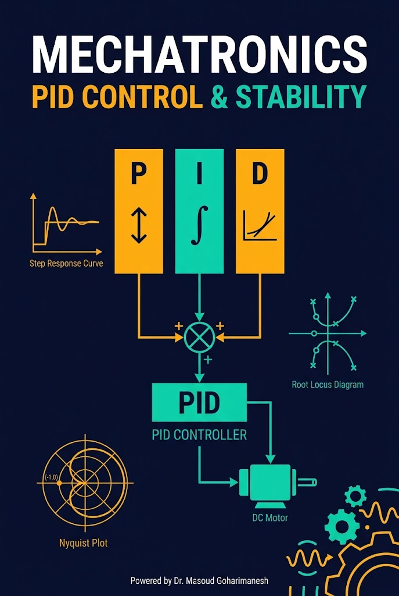
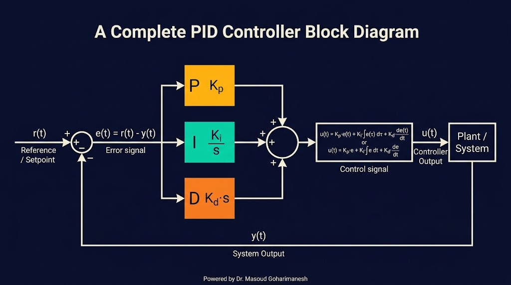
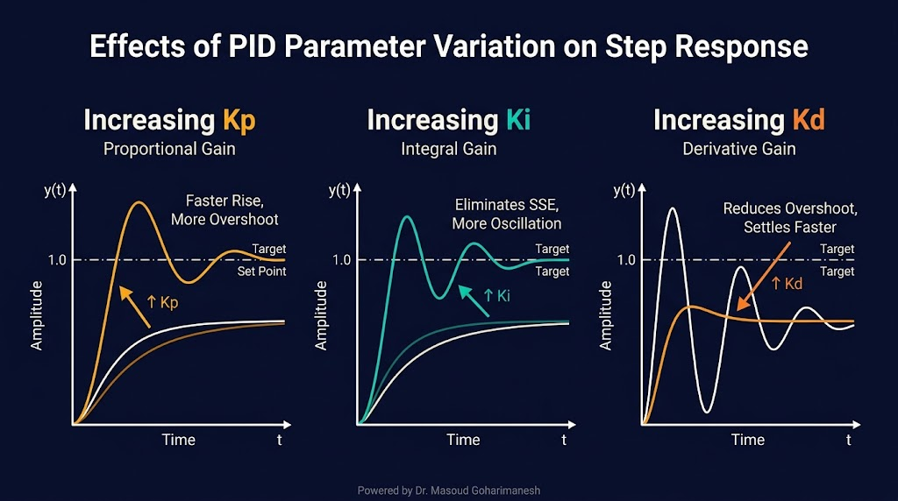
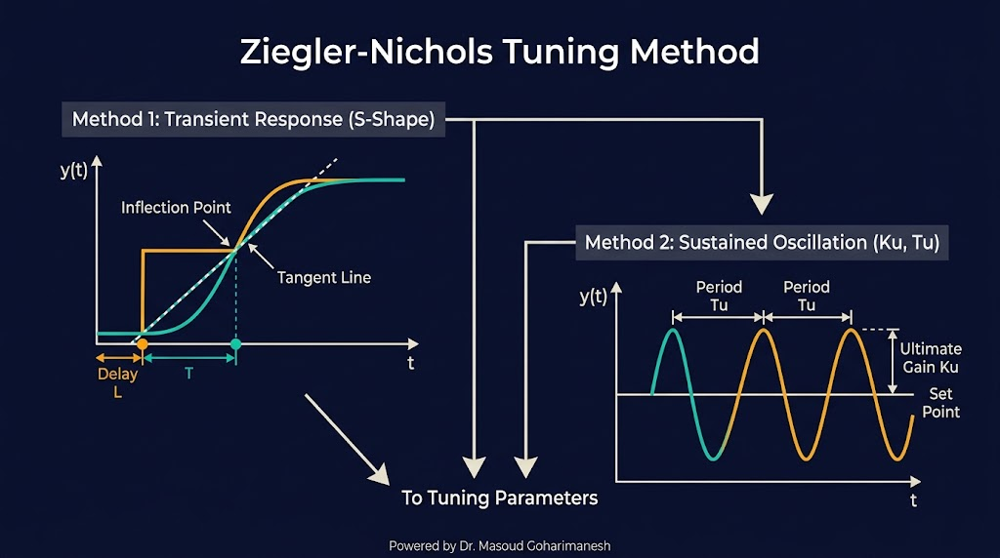
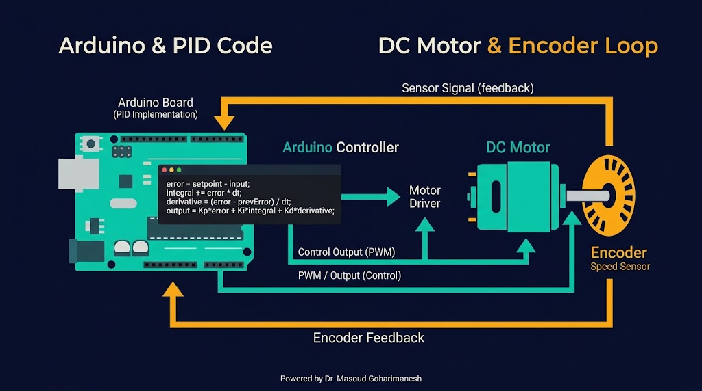
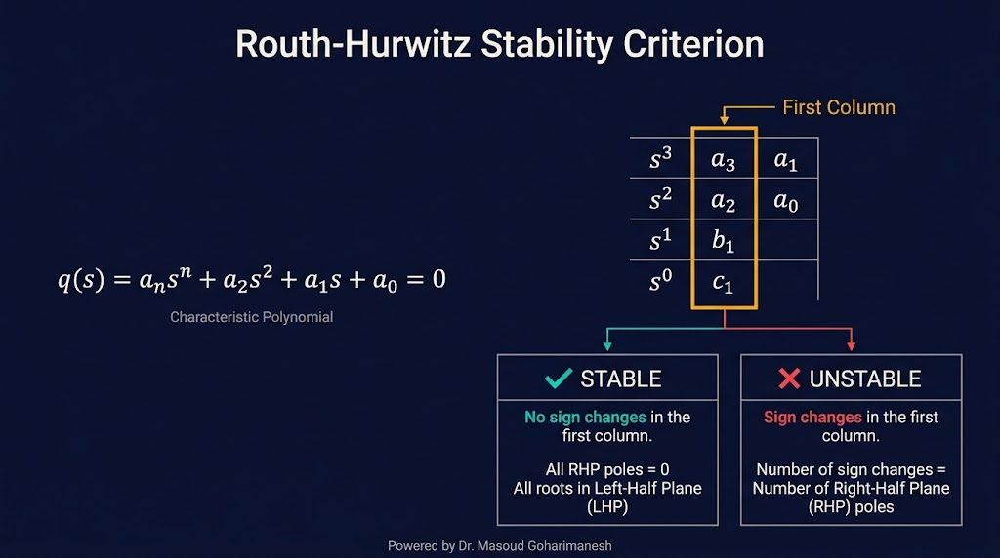
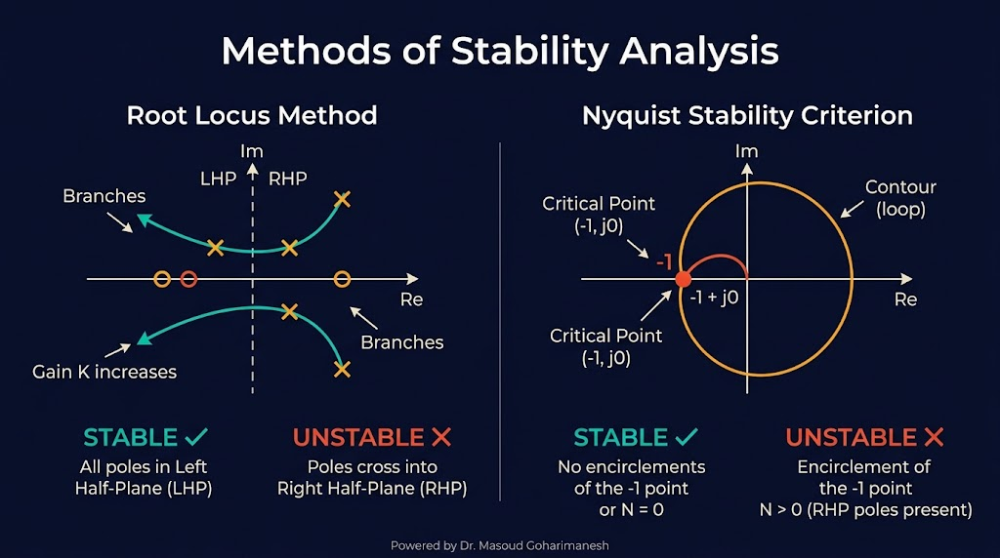

طراحی PID، پایداری و تنظیم پارامترها
دکتر مسعود گوهریمنش
دانشیار گروه مهندسی مکانیک
دانشگاه تربت حیدریه | پاییز ۱۴۰۵
بیش از ۹۰٪ کنترلکنندههای صنعتی از PID استفاده میکنند!
چگونه میتوان یک سیستم را طوری کنترل کرد که هم سریع باشد، هم دقیق، و هم پایدار؟ راز تنظیم PID در چیست؟
ساده، قدرتمند و همهکاره
فقط ۳ پارامتر برای تنظیم — بدون نیاز به مدل دقیق سیستم
مناسب برای ۹۰٪ کاربردهای صنعتی و رباتیک
امکان تحلیل پایداری و تنظیم دقیق
P: واکنش به خطای فعلی | I: واکنش به تجمع خطا | D: واکنش به نرخ تغییر خطا
واکنش متناسب با خطای فعلی
Kp: بهره تناسبی — افزایش آن باعث سریعتر شدن پاسخ میشود.
مثال رباتیک: برای کنترل موقعیت مفصل ربات، P تنها کافی نیست — خطای ماندگار باعث عدم رسیدن دقیق به هدف میشود.
حذف خطای ماندگار
Ki: بهره انتگرالی — تا زمانی که خطا وجود دارد، خروجی افزایش مییابد.
مثال رباتیک: در کنترل سرعت موتور، I تضمین میکند که سرعت واقعی دقیقاً برابر سرعت مرجع باشد.
پیشبینی و کاهش نوسان
Kd: بهره مشتق — متناسب با سرعت تغییر خطا واکنش نشان میدهد.
مثال رباتیک: در ربات دوپا، D از سقوط ناگهانی جلوگیری میکند.
ترکیب سه جزء

راهنمای تنظیم

| پارامتر | زمان صعود | Overshoot | زمان نشست | خطای ماندگار |
|---|---|---|---|---|
| Kp ↑ | کاهش | افزایش | تغییر کم | کاهش |
| Ki ↑ | کاهش | افزایش | افزایش | حذف |
| Kd ↑ | تغییر کم | کاهش | کاهش | تغییر کم |
روش کلاسیک و پرکاربرد

سادهترین روش در عمل
MATLAB/Simulink PID Tuner | Python Control Library | ابزارهای آنلاین
کد آماده برای پروژههای رباتیک

#include <PID_v1.h>
double Setpoint, Input, Output;
double Kp=2, Ki=5, Kd=1;
PID myPID(&Input, &Output, &Setpoint, Kp, Ki, Kd, DIRECT);
void setup() {
myPID.SetMode(AUTOMATIC);
}
void loop() {
Input = analogRead(A0);
myPID.Compute();
analogWrite(9, Output);
}
آیا سیستم پایدار است؟

یک سیستم پایدار است اگر و تنها اگر تمام ریشههای معادله مشخصه در نیمصفحه چپ (بخش حقیقی منفی) باشند. جدول روث-هورویتز تعداد ریشههای نیمصفحه راست را مشخص میکند.
قاعده: تعداد تغییر علامت در ستون اول جدول = تعداد قطبهای ناپایدار.
روشهای گرافیکی تحلیل پایداری

مسیر حرکت قطبهای سیستم با تغییر بهره Kp. اگر تمام مسیرها در نیمصفحه چپ باقی بمانند، سیستم پایدار است.
نمودار پاسخ فرکانسی حلقه باز. اگر منحنی نقطه -1+j0 را احاطه نکند، سیستم حلقه بسته پایدار است.
تنظیم زنده PID
پارامترهای Kp، Ki، Kd را تغییر دهید و پاسخ را ببینید.
جلسه نهم - سیستمهای کنترل (بخش دوم)
نکات کلیدی جلسه نهم
جلسه بعد: میکروکنترلرها و پردازندهها (بخش اول)
Powered by Dr. Masoud Goharimanesh